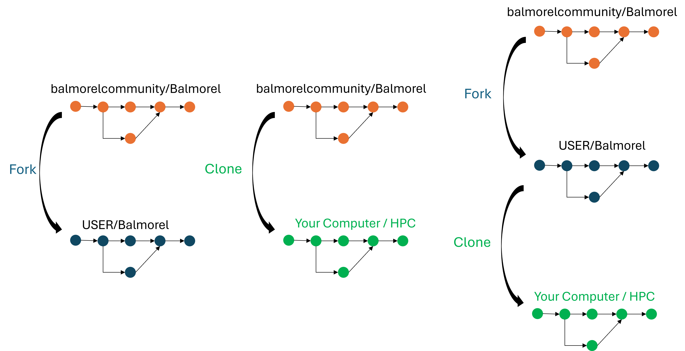
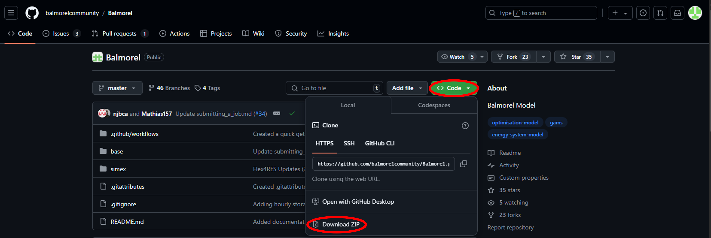

Balmorel GitHub Tutorial
This tutorial will show, how to work with Balmorel on GitHub. It will cover the basic steps of:
Forking the Balmorel and Balmorel_data repository.
Cloning the repository to your local PC or HPC and setting up the folder structure
Commiting changes and pushing them upstream to your remote repository
Creating your own branch
Making a pull request to merge into the master branch
GitHub, VS Code, or command line
We offer three different paths for this exercise:
GitHub (this is the one we will demonstrate)
VS Code (if you prefer to follow along using an editor)
Command line (for people comfortable with the command line)
Creating a copy of the repository by “forking” and/or “cloning”
A repository is a collection of files in one directory tracked by Git. A GitHub repository is GitHub’s copy, which adds things like access control, issue tracking, and discussions. Each GitHub repository is owned by a user or organization, who controls access.
For Balmorel we have mainly to of these repositories:
https://github.com/balmorelcommunity/Balmorel, which contains the framework, e.g. mathematical formulations and addons.
https://github.com/balmorelcommunity/Balmorel_data, which contains all the data needed to run the model.
To start, we need to make our own copy of these repositories and transfer them to our own Computer or the HPC.
{kind=link}

Illustration of the concepts of forking and cloning and the recommended workflow for Balmorel: forking then cloning.
At all times you should be aware of if you are looking at your repository or the upstream repository (original repository):
Your repository: https://github.com/USER/Balmorel
Upstream repository: https://github.com/balmorelcommunity/Balmorel
How to create a fork
Go to the repository view on GitHub: https://github.com/balmorelcommunity/Balmorel
First, on GitHub, click the button that says “Fork”. It is towards the top-right of the screen.
You should shortly be redirected to your copy of the repository USER/Balmorel.
Repeat the same step for the https://github.com/balmorelcommunity/Balmorel_data repository.
Exercise: Copy (clone) the repositories and setup the correct folder structure
Work on this by yourself or in pairs.
Exercise preparation
In this case you will download the repositories as a .zip file from GitHub:
Go to the Balmorel GitHub repository.
Make sure the URL says
https://github.com/USER/Balmorel, whereUSERis your username.Download the repository:
{kind=link}

Extract the folder to a location of your choice.
Download the
https://github.com/USER/Balmorel_datarepository the same way (Make sure you are cloning your forked repository).Extract the files into the local copy of the Balmorel repository, into the base folder.
Rename the
Balmorel_datafolder todata.
You need to have forked the repository as described above.
We need to start by making a clone of this repository so that you can work locally.
Start VS Code.
If you don’t have the default view (you already have a project open), go to File → New Window.
Under “Start” on the screen, select “Clone Git Repository…”. Alternatively navigate to the “Source Control” tab on the left sidebar and click on the “Clone Repository” button.
Paste in this URL:
https://github.com/USER/Balmorel, whereUSERis your username. You can copy this from the browser.Browse and select the folder in which you want to clone the repository.
Say yes, you want to open this repository.
Select “Yes, I trust the authors” (the other option works too).
Repeat the same process for
https://github.com/USER/Balmorel_datauntil you have to choose the location.Select the
.../Balmorel/and clone the data to this location.Rename the
Balmorel_datafolder todata.
This path is advanced and we do not include all command line information: you need to be somewhat comfortable with the command line already.
You need to have forked the repository as described above.
We need to start by making a clone of this repository so that you can work locally.
Start the terminal in which you use Git (terminal application, or Git Bash).
Change to the directory where you would want the repository to be (
cd ~/codefor example, if the~/codedirectory is where you store your files).Run the following command:
git clone https://github.com/USER/Balmorel, whereUSERis your username. You might need to use a SSH clone command instead of HTTPS, depending on your setup.Change to that directory:
cd BalmorelRun the following command:
git clone https://github.com/USER/Balmorel_data, whereUSERis your username.Rename the
Balmorel_datafolder todataby typing the following command:mv Balmorel_data data.
Exercise: Browsing and editing the repositories (10 min)
Browse the Balmorel repository either on GitHub or your local PC and explore commits and branches. Take notes and prepare questions. The hints are for the GitHub path in the browser.
Browse the commit history: Are commit messages understandable? (Hint: “Commit history”, the timeline symbol, above the file list)
Try to find the history of commits for a single file, e.g.
base/output/OUTPUT_SUMMARY.inc. (Hint: “History” button in the file view)Which files creates the MainResults.gdx file? (Hint: the GitHub search on top of the repository view, look for execute_unload
"MainResults.gdx")In the
base/output/OUTPUT_SUMMARY.incfile, find out when the parameterSTORAGE_LEVELwas added and in which commit. (Hint: “Blame” view in the file view)
Creating branches and commits
The first and most basic task to do in Git is record changes using commits. In this part, we will record changes in two ways: on a new branch (which supports multiple lines of work at once), and directly on the “main” branch (which happens to be the default branch here).
The goal is to:
Record new changes to our own copy of Balmorel.
Understand adding changes in two separate branches.
See how to compare different versions or branches.
Background
Each commit is a snapshot of the entire project at a certain point in time and has a unique identifier (hash) .
A branch is a line of development, and the
mainbranch ormasterbranch are often the default branch in Git.A branch in Git is like a sticky note that is attached to a commit. When we add new commits to a branch, the sticky note moves to the new commit.
Tags are a way to mark a specific commit as important, for example a release version. They are also like a sticky note, but they don’t move when new commits are added.
Exercise: Creating branches and commits
Exercise: Practice creating commits and branches (20 min)
First create a new branch and then modify an existing file and commit the change. Make sure that you now work on your copy of the repository. You can for example change the years in the simulation by editing the
Y.incfile.In a new commit, modify the file again.
Switch to the
mainbranch and create a commit there.Browse the network and locate the commits that you just created (“Insights” -> “Network”).
Compare the branch that you created with the
mainbranch. Can you find an easy way to see the differences?
Merging changes and contributing to the project
Git allows us to have different development lines where we can try things out. It also allows different people to work on the same project at the same. This means that we have to somehow combine the changes later. In this part we will practice this: merging.
Goals for this section:
Understand that on GitHub merging is done through a pull request (on GitLab: “merge request”). Think of it as a change proposal.
Create and merge a pull request within your own repository.
Understand (and optionally) do the same across repositories, to contribute to the upstream public repository.
Exercise
Exercise: Merging branches
First, we make something called a pull request, which allows review and commenting before the actual merge.
We assume that in the previous exercise you have created a new branch with one or few new commits. We provide basic hints. You should refer to the solution as needed.
Navigate to your branch from the previous exercise (hint: the same branch view we used last time).
Begin the pull request process (hint: There is a “Contribute” button in the branch view).
Add or modify the pull request title and description, and verify the other data. In the pull request verify the target repository and the target branch. Make sure that you are merging within your own repository. GitHub: By default, it will offer to make the change to the upstream repository,
balmorelcommunity. You should change this, you shouldn’t contribute your commit(s) upstream yet. Where it saysbase repository, select your own repository.Create the pull request by clicking “Create pull request”. Browse the network view to see if anything has changed yet.
Merge the pull request, or if you are not on GitHub you can merge the branch locally. Browse the network again. What has changed?
Find out which branches are merged and thus safe to delete. Then remove them and verify that the commits are still there, only the branch labels are gone (hint: you can delete branches that have been merged into
main).Optional: Try to create a new branch with a new change, then open a pull request but towards the original (upstream) repository. We will later merge few of those.
When working locally, it’s easier to merge branches: we can just do the merge, without making a pull request. But we don’t have that step of review and commenting and possibly adjusting.
Switch to the
mainbranch that you want to merge the other branch into. (Note that this is the other way around from the GitHub path).
Then:
Merge the other branch into
main(which is then your current branch).Find out which branches are merged and thus safe to delete. Then remove them and verify that the commits are still there, only the branch labels are gone. (Hint: you can delete branches that have been merged into
main).Optional: Try to create a new branch, and make a GitHub pull request with your change, and contribute it to our upstream repository.